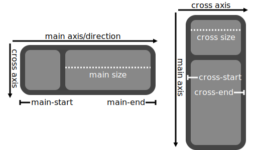
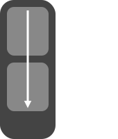
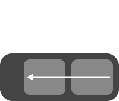
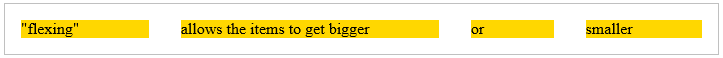
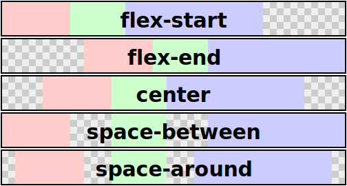
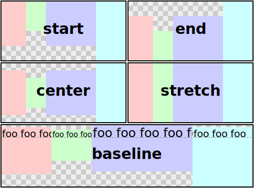
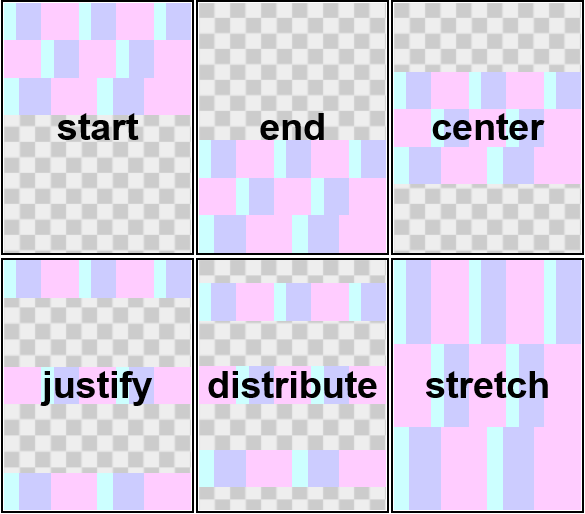

Ian Hickson, formerly of Opera Software, ian@hixie.ch
David Hyatt, formerly of Netscape Corporation, hyatt@apple.com
Abstract
The specification describes a CSS box model optimized for user interface design. In the flexbox layout model, the children of a flexbox can be laid out in any direction, and can "flex" their sizes, either growing to fill unused space or shrinking to avoid overflowing the parent. Both horizontal and vertical alignment of the children can be easily manipulated. Nesting of these boxes (horizontal inside vertical, or vertical inside horizontal) can be used to build layouts in two dimensions.
Status of this document
The following features are at-risk:
Flexbox pagination rules
Table of contents
Introduction
This section is not normative.
CSS 2.1 defined four layout modes — algorithms which determine the size and position of boxes based on their relationships with their sibling and ancestor boxes: block layout, designed for laying out documents; inline layout, designed for laying out text; table layout, designed for laying out information in a tabular format; and positioned layout, designed for very explicit positioning without much regard for other elements in the document. This module introduces a new layout mode, flexbox layout, which is designed for laying out more complex applications and webpages.
Flexbox layout is superficially similar to block layout. It lacks many of the more complex text or document-formatting properties that can be used in block layout, such as 'float' and 'columns', but in return it gains more simple and powerful tools for aligning its contents in ways that webapps and complex web pages often need.
The contents of a flexbox can be laid out in any direction (left, right, down, or even up!), can have their order swapped around dynamically (i.e., display order is independent of source order), and can "flex" their sizes and positions to respond to the available space. If a flexbox is multi-line, the flexbox items flow in two dimensions, wrapping into separate lines in a fashion similar to how text is wrapped into multiple lines.
For example, the following HTML snippet uses flexbox to create a toolbar with icons. The flexbox is horizontal, and the children's widths don't fill the flexbox's width, so the additional space is distributed around and between the children. As the flexbox grows (perhaps because the user is viewing the page on a wider screen), the children spread out evenly and automatically:
<ul>
<li><button><img src='new.svg' alt="New"></button></li>
<li><button><img src='upload.svg' alt="Upload"></button></li>
<li><button><img src='save.svg' alt="Save"></button></li>
<li><button><img src='trash.svg' alt="trash"></button></li>
</ul>
<style>
ul { display: flexbox; flex-pack: distribute; }
/* Irrelevant styling for this example removed. */
</style>
Example rendering of the above code snippet, at two different flexbox widths.
Module interactions
This module extends the definition of the 'display' property.
Values
This specification follows the CSS property definition conventions from [[!CSS21]]. Value types not defined in this specification are defined in CSS Level 2 Revision 1 [[!CSS21]]. Other CSS modules may expand the definitions of these value types: for example [[CSS3VALUES]], when combined with this module, expands the definition of the <length> value type as used in this specification.
In addition to the property-specific values listed in their definitions, all properties defined in this specification also accept the ''inherit'' keyword as their property value. For readability it has not been repeated explicitly.
The Flexbox Box Model
An element with ''display:flexbox'' or ''display:inline-flexbox'' is a flexbox. Children of a flexbox are called flexbox items and are laid out using the flexbox box model.
Unlike block layout, which is normally biased towards laying things out vertically, and inline layout, which is normally biased toward laying things out horizontally, the flexbox layout algorithm is agnostic as to the direction the flexbox happens to be laid out in. To make it easier to talk about flexbox layout in a general way, we will define several direction-agnostic terms here to make the rest of the spec easier to read and understand.

An illustration of the various directions and sizing terms used in this specification, respectively for ''row'' and ''column'' flexboxes.
The main axis of a flexbox is the axis along which flexbox items are laid out.
The flexbox items are ordered
such that they start on the main-start side of the flexbox,
and go toward the main-end side.
A flexbox item's width or height,
whichever is in the main dimension,
is the item's main size.
The flexbox item's main size property is
either the 'width' or 'height' property,
whichever is in the main dimension.
The axis perpendicular to the main axis is called the cross axis,
and similarly has cross-start and cross-end directions and sides defined.
The width or height of a flexbox item,
whichever is in the cross dimension,
is the item's cross size,
and similarly the cross size property is
whichever of 'width' or 'height' that is in the cross dimension.
The contents of a flexbox can be easily and powerfully manipulated with a handful of properties.
Most significantly,
flexbox items can "flex" their main size by using the 'flex' property.
This "flexing" allows the items to get bigger or smaller based on the available space in the page.
If there is leftover space in the flexbox after all of the flexbox items have finished flexing,
the items can be aligned, centered, or distributed with the 'flex-pack' property.
Flexbox items can also be completely rearranged within the flexbox with the 'flex-order' property.
In the cross axis,
flexbox items can either "stretch" to fill the available space
or be aligned within the space with the 'flex-align' property.
If a flexbox is multi-line,
new lines are added in the cross-end direction,
and can similarly be aligned, centered, or distributed
within the flexbox with the 'flex-line-pack' property.
Flexboxes: the ''flexbox'' and ''inline-flexbox'' 'display' values
An element whose computed 'display' is either ''flexbox'' or ''inline-flexbox''
is a flexbox,
and establishes a new flexbox formatting context for its contents.
This is similar to a block formatting context root:
floats do not intrude into the flexbox,
and the flexbox's margins do not collapse with the margins of its contents.
Additionally,
each of the flexbox items establishes a new formatting context for its contents.
The ''flexbox'' value makes the flexbox a block-level element.
The ''inline-flexbox'' value makes the flexbox an atomic inline-level element.
Flexboxes are not block containers,
and so some properties that were designed with the assumption of block layout don't apply in a flexbox context.
In particular:
all of the 'column-*' properties in the Multicol module have no effect on a flexbox.
'float' and 'clear' have no effect on a flexbox item.
Using 'float' on an element still causes that element's 'display' property to compute to ''block'',
and thus 'float' may affect whether an element becomes a flexbox item
or is wrapped in one.
(See CSS 2.1 Chapter 9.7.)
'vertical-align' has no effect on the alignment of a flexbox item in the flexbox
If an element's specified value for 'display' is ''inline-flexbox''
and the element is floated or absolutely positioned,
the computed value of 'display' is ''flexbox''.
The table in CSS 2.1 Chapter 9.7 is thus amended
to contain an additional row,
with ''inline-flexbox'' in the "Specified Value" column
and ''flexbox'' in the "Computed Value" column.
The baseline of a flexbox is:
If any of the flexbox items on the flexbox's first line
(after reordering with 'flex-order')
have a computed value of ''baseline'' for 'flex-item-align',
the flexbox's baseline is the baseline of those flexbox items.
Otherwise, if the flexbox has at least one flexbox item,
and the baseline of its first flexbox item
(after reordering with 'flex-order')
is parallel to the flexbox's main-axis,
the flexbox's baseline is the baseline of its first flexbox item.
Otherwise, the flexbox's baseline is the "after" edge of its content box.
Flexbox Items
The flexbox layout algorithm operates on boxes generated by flexbox items.
A flexbox item is:
A block-level child of a flexbox element
An atomic inline-level child of a flexbox element
An anonymous block element wrapped around a contiguous run of non-replaced inline child elements.
However, if the contents of the anonymous block would be solely an anonymous inline containing only whitespace,
the box is not generated,
as if it had ''display:none''.
Some values of 'display' trigger the generation of anonymous boxes.
For example, a ''table-cell'' child of a block container is fixed up by generating ''table'' and ''table-row'' elements around it.
This fixup must occur before a flexbox's contents are checked to see if it's necessary to generate anonymous flexbox items.
In the future, other kinds of fixup such as ''display:run-in'' or ''display:ruby'' should also run before flexbox fixup.
Examples of flexbox items:
<div style="display:flexbox">
<!-- flexbox item: block-level child -->
<div id="item1">block</div>
<!-- not a flexbox item, because it's out-of-flow -->
<!-- however, an anonymous flexbox item is wrapped around
the placeholder it leaves behind-->
<div id="not-an-item2" style="position: absolute;">block</div>
<!-- flexbox item: block-level child -->
<div id="item3" style="display:table">table</div>
<!-- flexbox item: anonymous table wrapped around table-cell -->
<div id="item4" style="display:table-cell">table-cell</div>
<!-- flexbox item: anonymous block box around inline content -->
anonymous item 5
<!-- flexbox item: block-level child -->
<div id="item6">block</div>
<!-- flexbox item: anonymous block around inline content -->
anonymous item 7.1
<span id="item7.1">
text 7.2
<div id="not-an-item7.3">block</div>
text 7.4
</span>
<!-- flexbox item: block-level replaced element -->
<iframe id="item8" style="display:block;"></iframe>
<!-- flexbox item: inline-level replaced element -->
<img id="item9">
<!-- flexbox item: atomic inline-level element -->
<button id="item10">button</button>
<!-- flexbox item: inline-table -->
<div id="item11" style="display:inline-table">table</div>
<!-- flexbox item: floated inline, which changes to a block -->
<span id="item12" style="float: left;">span</span>
</div>
Notice that block element "not-an-item7.3" is not a separate flexbox item,
because it is contained inside an inline element which is being wrapped into an anonymous flexbox item.
Similarly,
the block element "not-an-item2" is not a flexbox item,
because it's absolutely positioned and thus out of flow.
The computed value for 'display' for elements that are flexbox items
must be determined by applying the table in CSS 2.1 Chapter 9.7.
Absolutely Positioned Flexbox Children
Absolutely positioned children of a flexbox are not flexbox items,
but they leave behind "placeholders" in their normal position in the box tree.
These placeholders are anonymous inline boxes with a width and height of ''0px'',
and they interact normally with the flexbox layout algorithm.
In particular,
they'll trigger the creation an anonymous flexbox item wrapper boxes,
or join neighboring inline elements in their anonymous flexbox item wrapper boxes.
The "static position" of an absolutely positioned child of a flexbox
(the position when the 'top'/'right'/'bottom'/'left' properties are ''auto''),
then,
is the final position of its corresponding placeholder, after flexbox layout has been performed.
Note: In most cases,
this means that absolutely positioned items will have no effect on flexbox layout,
even if they force the generation of an anonymous flexbox item wrapper,
because those wrapper items will also collapse to zero size and have no effect.
The only exceptions are when the flexbox has ''flex-pack:justify'' or ''flex-pack:distribute'',
in which case the anonymous flexbox item will cause there to be two packing spaces where there would otherwise be only one,
resulting in a double-size space between two "real" items.
Multi-line Flexbox
A flexbox can be either single-line or multi-line,
depending on the 'flex-wrap' property.
A single-line flexbox lays out all of its children in a single line,
even if that would cause the flexbox to overflow its bounds.
A multi-line flexbox breaks its flexbox items across multiple lines to avoid overflowing,
similar to how text is broken onto a new line when it gets too wide to fit on the existing line.
Every line contains at least one flexbox item,
unless the flexbox itself is completely empty.
When additional lines are created,
they are stacked in the flexbox along the cross axis.
Once content is broken into lines,
each line is laid out independently;
flexible lengths and the 'flex-pack' and 'flex-item-align' properties only consider the items on a single line at a time.
The main size of a line is the same as the main size of the flexbox's content box.
the cross size of a line is the minimum size necessary to contain the flexbox items on the line,
after aligment due to 'flex-item-align'.
The lines themselves are then aligned within the flexbox with the 'flex-line-pack' property.
This example shows four buttons that do not fit horizontally.
The buttons are first set to their preferred widths,
in this case 80 pixels.
This will allow the first three buttons to fit in 240 pixels with 60 pixels left over of remaining space.
Because the 'flex-flow' property specifies a multi-line flexbox
(due to the ''wrap'' keyword appearing in its value),
the flexbox will create an additional line to contain the last button.
Flexibility is applied to each element,
separately for each line.
The first line has 60 pixels of remaining space
and all of the buttons have the same flexibility,
so each of the three buttons on that line will receive 20 pixels of extra width,
ending up 100px wide.
The remaining button is on a line of its own
and will stretch to the entire width of the line, or 300 pixels.
If the box was resized, the buttons may rearrange onto different lines as necessary.
If the style rules in the example above were changed to the following:
Similar to the previous example,
the first three buttons will fit on the first line,
and the last button will wrap onto a new line.
However, when the buttons attempt to flex they can only grow to 90px each,
due to their 'max-width' property.
This leaves 30px of free space on the first line
and 210px of free space on the second line.
Because 'flex-pack' is set to ''center'',
the buttons will be centered on each line,
with the free space split equally on either side.
Ordering and Orientation
The first level of flexbox functionality is the ability to lay out a flexbox's contents in any direction and in any order.
This allows an author to trivially achieve effects that would previously have required complex or fragile methods,
such as hacks using the 'float' and 'clear' properties.
This functionality is exposed through the 'flex-direction', 'flex-wrap', and 'flex-order' properties.
Flexbox Flow Direction: the 'flex-direction' property
The 'flex-direction' property specifies how flexbox items are placed in the flexbox,
by setting the direction of the flexbox's main axis.
This determines the direction that flexbox items are laid out in.
''row''
The flexbox's main axis has the same orientation as the inline axis of the current writing mode
(the primary direction that text is laid out in).
The main-start and main-end directions are equivalent to the start and end directions, respectively,
of the current writing mode.
''row-reverse''
Same as ''row'',
except the main-start and main-end directions are swapped.
''column''
The flexbox's main axis has the same orientation as the block axis of the current writing mode
(the primary direction that blocks are laid out in).
The main-start and main-end directions are equivalent to the before and after directions, respectively,
of the current writing mode.
''column-reverse''
Same as ''column'',
except the main-start and main-end directions are swapped.
The 'flex-wrap' property controls whether the flexbox is single-line or multi-line,
and the direction of the cross-axis,
which determines the direction new lines are stacked in.
''nowrap''
The flexbox is single-line.
The cross-start direction is equivalent to either
the start
or before
direction of the current writing mode,
whichever is in the cross axis,
and the cross-end direction is the opposite direction of cross-start.
''wrap''
The flexbox is multi-line.
The cross-start direction is equivalent to either
the start
or before
direction of the current writing mode,
whichever is in the cross axis,
and the cross-end direction is the opposite direction of cross-start.
''wrap-reverse''
Same as ''wrap'',
except the cross-start and cross-end directions are swapped.
Flex Direction and Wrap: the 'flex-flow' shorthand
The 'flex-flow' property is a shorthand for setting the 'flex-direction' and 'flex-wrap' properties together.
Some examples of valid flows:
div { flex-flow: row; }
/* Initial value. Main-axis is
inline, no wrap. */
div { flex-flow: column wrap; }
/* Main-axis is block-direction and lines
wrap in the inline direction. For an
English page, the main-axis is top-to-bottom
and lines wrap to the right. */

div { writing-mode: vertical-rl;
flex-flow: column wrap-reverse; }
/* Main-axis is block direction (right to
left). New lines wrap upwards. */

Display Order: the 'flex-order' property
Flexbox items are, by default, displayed and laid out in the same order as they appear in the source document. The 'flex-order' property may be used to change this ordering.
The 'flex-order' property assigns flexbox items to ordinal groups.
Ordinal groups control the order in which flexbox items appear. A flexbox will lay out its content starting from the lowest numbered ordinal group and going up. Items with the same ordinal group are laid out in the order they appear in the source document. 'flex-order' has no effect on stacking/layering; elements must still be drawn over/under each other based on document order, 'z-index', and other relevant means.
The following figure shows a simple tabbed interface, where the tab for the active pane is always in front:
This could be implemented with the following CSS (showing only the flexbox-relevant code):
.tabs {
display: flexbox;
}
.tabs > .current {
flex-order: -1; /* Lower than the default of 0 */
}
Many web pages have a similar shape in the markup, with a header on top, a footer on bottom, and then a content area and one or two additional columns in the middle. Generally, it's desirable that the content come first in the page's source code, before the additional columns. However, this makes many common designs, such as simply having the additional columns on the left and the content area on the right, difficult to achieve. This has been addressed in many ways over the years, often going by the name "Holy Grail Layout" when there are two additional columns. 'flex-order' makes this trivial. For example, take the following sketch of a page's code and desired layout:
As an added bonus, the columns will all be equal-height by default, and the main content will be as wide as necessary to fill the screen. Additionally, this can then be combined with media queries to switch to an all-vertical layout on narrow screens:
@media all and (max-width: 600px) {
/* Too narrow to support three columns */
#main { flex-flow: column; }
#main > article, #main > nav, #main > aside {
/* Return them to document order */
flex-order: 0; width: auto;
}
}
(Further use of multiline flexboxes to achieve even more intelligent wrapping left as an exercise for the reader.)
Flexibility: the 'flex' property
The defining aspect of flexbox layout is the ability to make the flexbox items "flex", altering their width or height to fill the available space. This is done by using a 'flex' property. A flexbox distributes free space to its items proportional to their positive flexibility, or shrinks them to prevent overflow proportional to their negative flexibility.
Two integers for positive and negative flex, and a preferred size given either as an absolute length or a keyword.
Media:
visual
Animatable:
yes, as <number> and <length> or <percentage>, but see prose
Canonical Order:
as specified
The 'flex' property specifies the parameters of a flexible length:
the positive
and negative flexibility,
and the preferred size.
When the element containing 'flex' is a flexbox item,
'flex' is consulted instead of the main size property
to determine the main size of the element.
If an element is not a flexbox item,
'flex' has no effect.
The two <number>s represent the flexibility.
Negative values for either are invalid.
The first <number> sets the positive flexibility,
and the second <number>, if specified, sets the negative flexibility.
The negative flexibility defaults to ''0'';
the positive flexibility defaults to ''1''.
The <'width'> component sets the preferred size.
If omitted, the preferred size defaults to ''0px''.
If the <'width'> component is ''auto'' on a child of a flexbox,
the preferred size is the computed value of the main size property.
If the <'width'> is zero,
it must be specified with a unit
(like ''0px'')
or omitted
to avoid ambiguity;
unitless zero will either be interpreted as as one of the flexibilities,
or will make the declaration invalid.
The keyword 'none' computes to ''0 0 auto''.
The 'flex' property is animatable
by animating the positive flexibility, negative flexibility, and preferred size independently.
Can you animate between zero and non-zero flex?
It has bad effects right now,
and should possibly be disallowed until we know how to fix it.
Flexibility allows elements to respond directly to the available space,
optionally taking into account size of content:
<!DOCTYPE html>
<style>
div { display:flexbox; outline:1px solid silver; }
p { flex:1 auto; margin:1em; background:gold; }
</style>
<div>
<p>"flexing"</p>
<p>allows the items to get bigger</p>
<p>or</p>
<p>smaller</p>
</div>
Here, all four paragraphs have a preferred size equal to the length of their text.
The leftover space
(after subtracting their preferred sizes and margins from the width of the flexbox)
is distributed evenly to the four paragraphs.
This shows how elements with the same flexibility may still end up different sizes,
if their preferred sizes are different.

Alignment
After a flexbox's contents have finished their flexing
and the dimensions of margin boxes of all flexbox items are finalized,
they can be aligned along the main axis with 'flex-pack'
and the cross axis with 'flex-align' and 'flex-item-align'.
These properties make many common types of alignment trivial,
including some things that were very difficult in CSS 2.1,
like horizontal and vertical centering.
The 'flex-pack' property aligns flexbox items along the main axis of the current line of the flexbox.
This is done after any flexible lengths and any auto margins have been resolved.
Typically it helps distribute extra free space leftover when either
all the flexbox items on a line are inflexible,
or are flexible but have reach their maximum size,
but it also exerts some control over the alignment of items when they overflow the line.
''start''
Flexbox items are packed toward the start of the line.
The main-start margin edge of the first flexbox item on the line
is placed flush with the main-start edge of the line,
and each subsequent flexbox item is placed flush with the preceding item.
''end''
Flexbox items are packed toward the end of the line.
The main-end margin edge of the last flexbox item
is placed flush with the main-end edge of the line,
and each preceding flexbox item is placed flush with the subsequent item.
''center''
Flexbox items are packed toward the center of the line.
The flexbox items on the line are placed flush with each other
and aligned in the center of the line,
with equal amounts of empty space between the main-start edge of the line and the first item on the line
and between the main-end edge of the line and the last item on the line.
(If the leftover free-space is negative,
the flexbox items will overflow equally in both directions.)
''justify''
Flexbox items are evenly distributed in the line.
If the leftover free-space is negative
or there is only a single flexbox item on the line,
this value is identical to ''start''.
Otherwise,
the main-start margin edge of the first flexbox item on the line
is placed flush with the main-start edge of the line,
the main-end margin edge of the last flexbox item on the line
is placed flush with the main-end edge of the line,
and the remaining flexbox items on the line are distributed
so that the empty space between any two adjacent items is the same.
''distribute''
Flexbox items are evenly distributed in the line,
with half-size spaces on either end.
If the leftover free-space is negative o
r there is only a single flexbox item on the line,
this value is identical to ''center''.
Otherwise, the flexbox items on the line are distributed
such that the empty space between any two adjacent flexbox items on the line is the same,
and the empty space before the first and after the last flexbox items on the line are half the size of the other empty spaces.

An illustration of the five 'flex-pack' keywords and their effects on a flexbox with three colored items.
Cross-axis Alignment: the 'flex-align' and 'flex-item-align' properties
''auto'' computes to parent's 'flex-align'; otherwise as specified
Media:
visual
Animatable:
no
Canonical Order:
as specified
Flexbox items can be aligned in the cross axis of the current line of the flexbox,
similar to 'flex-pack' but in the perpendicular direction.
'flex-align' sets the default alignment for all of the flexbox's items,
including anonymous flexbox items.
'flex-item-align' allows this default alignment to be overridden for individual flexbox items
(for anonymous flexbox items,
'flex-item-align' always matches the value of 'flex-align' on their associated flexbox).
A value of ''auto'' for 'flex-item-align'
computes to the value of 'flex-align' on the flexbox item's flexbox.
The alignments are defined as:
''start''
The cross-start margin edge of the flexbox item
is placed flush with the cross-start edge of the line.
''end''
The cross-end margin edge of the flexbox item
is placed flush with the cross-end edge of the line.
''center''
The flexbox item's margin box is centered in the cross axis within the line.
(If the cross size of the flexbox is less than that of the flexbox item,
it will overflow equally in both directions.)
''baseline''
If the flexbox item's inline-axis is the same as the cross-axis,
this value is identical to ''start''.
Otherwise,
all flexbox items on the line with an alignment of ''baseline''
that don't run afoul of the previous paragraph
are aligned such that their baselines align,
and the item with the largest distance between its baseline and its cross-start margin edge
is placed flush against the cross-start edge of the line.
''stretch''
If the cross size property of the flexbox item is ''auto'',
it resolves to the length necessary to make the cross size of the item's margin box the same size as the line,
while still respecting 'min/max-width/height' constraints as normal.
The cross-start margin edge of the flexbox item
is placed flush with the cross-start edge of the line.

An illustration of the five 'flex-align' keywords and their effects on a flexbox with four colored items.
By using a vertical flexbox and 'flex-align', we can achieve behavior very close to HTML's <center> element:
Margins on flexbox items can be set to ''auto'', with effect very similar to auto margins in normal flow.
Through calculations of preferred sizes and flexible lengths, auto margins are considered to be zero.
Immediately before pack and align steps, if there are any auto margins on items in the direction of alignment and there is positive free space, the free space is distributed equally to the auto margins.
If free space was distributed to auto margins, the following pack or align step has no effect.
Auto margins can be used for simple alignment or for fine control.
Note that auto margins work consistently in both dimensions, so a simple markup like this
div { display:flexbox;
width:4em; height:4em; background:silver;
}
p { margin:auto; }
<div><p>OK</p></div>
start | end | center | justify | distribute | stretch
Initial:
stretch
Applies to:
multi-line flexboxes
Inherited:
no
Computed Value:
specified value
Media:
visual
Animatable:
no
Canonical Order:
as specified
The 'flex-line-pack' property aligns a flexbox's lines within the flexbox when there is extra space in the cross-axis, similar to how 'flex-pack' aligns individual items within the main-axis:
''start''
Lines are packed toward the start of the flexbox. The cross-start edge of the first line in the flexbox is placed flush with the cross-start edge of the flexbox, and each subsequent line is placed flush with the preceding line.
''end''
Lines are packed toward the end of the flexbox. The cross-end edge of the last line is placed flush with the cross-end edge of the flexbox, and each preceding line is placed flush with the subsequent line.
''center''
Lines are packed toward the center of the flexbox. The lines in the flexbox are placed flush with each other and aligned in the center of the flexbox, with equal amounts of empty space between the cross-start content edge of the flexbox and the first line in the flexbox and between the cross-end content edge of the flexbox and the last line in the flexbox. (If the leftover free-space is negative, the lines will overflow equally in both directions.)
''justify''
Lines are evenly distributed in the flexbox. If the leftover free-space is negative or there is only a single line in the flexbox, this value is identical to ''start''. Otherwise, the cross-start edge of the first line in the flexbox is placed flush with the cross-start content edge of the flexbox, the cross-end edge of the last line in the flexbox is placed flush with the cross-end content edge of the flexbox, and the remaining lines in the flexbox are distributed so that the empty space between any two adjacent lines is the same.
''distribute''
Lines are evenly distributed in the flexbox, with half-size spaces on either end. If the leftover free-space is negative or there is only a single line in the flexbox, this value is identical to ''center''. Otherwise, the lines in the flexbox are distributed such that the empty space between any two adjacent lines is the same, and the empty space before the first and after the last lines in the flexbox are half the size of the other empty spaces.
''stretch''
Lines stretch to take up the remaining space. If the leftover free-space is negative, this value is identical to ''start''. Otherwise, the free-space is split equally between all of the lines, increasing their cross size.
Note: Only multi-line flexboxes ever have free space in the cross-axis for lines to be aligned in, because in a single-line flexbox the sole line automatically stretches to fill the space.

An illustration of the 'flex-line-pack' keywords and their effects on a multi-line flexbox.
Flexbox Layout Algorithm
This section contains normative algorithms detailing the exact layout behavior of a flexbox and its contents. The algorithms here were designed to optimize readability and theoretical simplicity, and may not necessarily be the most efficient. Implementations may use whatever actual algorithms they wish, but must produce the same results as the algorithms described here.
This section is mainly intended for implementors.
Authors writing web pages should generally be served well by the individual property descriptions,
and do not need to read this section unless they have a deep-seated urge to understand arcane details of CSS layout.
A size is definite if it is a <length>,
or it is a <percentage> that is resolved against a definite size.
To lay out a flexbox and its contents, follow these steps:
Generate anonymous flexbox items around runs of contiguous inline content in the flexbox,
as described in the Flexbox Items section.
Re-order the flexbox items according to their 'flex-order'.
The items with the lowest (most negative) 'flex-order' values are first in the ordering.
If multiple items share a 'flex-order' value,
they're ordered by document order.
This affects the order in which the flexbox items generate boxes in the box-tree,
and how the rest of this algorithm deals with the items.
Determine the available main and cross space for the flexbox items.
For each dimension,
if that dimension of the flexbox is a definite size, use that;
otherwise, subtract the flexbox's margin, border, and padding
from the space available to the flexbox in that dimension
and use that value.
This might result in an infinite value.
Determine the hypothetical main size of each item:
If the item has a definite preferred size,
that's the hypothetical size.
Otherwise,
if the flexbox's main-axis is parallel to the item's inline-axis,
lay out the item using its preferred size
and the available space,
treating ''auto'' as ''fit-content''
unless the item's writing mode is perpendicular to the flexbox's writing mode
(in which case the rules for a box in an orthogonal flow [[!CSS3-WRITING-MODES]] are in effect).
If the preferred size is ''fill-available'', or ''fit-content'',
and the flexbox is being sized under a min-content or max-content main-size constraint,
size the item under that constraint instead.
The hypothetical size is the item's resulting measure.
Otherwise,
lay out the item
using the available space,
treating ''auto'' as ''fit-content''
unless the item's writing mode is perpendicular to the flexbox's writing mode
(in which case the rules for a box in an orthogonal flow [[!CSS3-WRITING-MODES]] are in effect).
If the preferred size is ''auto'', ''fill-available'', or ''fit-content'',
and the flexbox is being sized under a min-content or max-content cross-size constraint,
size the item under that constraint instead.
The hypothetical size is the item's resulting max-content extent.
Do not apply min/max-width/height constraints to the preferred size of flexible lengths —
those constraints are handled elsewhere in this algorithm, and doing so will produce incorrect results.
Determine the main size of the flexbox using its main size property.
In this calculation, the min content main size of the flexbox
is the maximum of the flexbox's items' min-content size contributions,
and the max content main size of the flexbox
is the sum of the flexbox's items' max-content size contributions.
For these computations, ''auto'' margins are treated as ''0'',
and for flexbox items the preferred size is used in place of the main size property.
Collect flexbox items into flexbox lines:
If the flexbox is single-line,
collect all the flexbox items into a single flexbox line.
Otherwise,
starting from the first uncollected item,
collect as many consecutive flexbox items as will fit
(but collect at least one)
into the flexbox's inner main size into a flexbox line.
For this step,
the size of a flexbox item is its hypothetical outer main size,
clamped according to its min and max main size properties.
Repeat until all flexbox items have been collected into flexbox lines.
Are flexboxes fill-available or fit-content by default?
Or are they really shrink-wrap, such that we need to adjust the main size here, now that we know the length of the longest line?
Resolve the flexible lengths of all the flexbox items to find their used main size,
and determine their hypothetical cross size from this main size.
Distribute any remaining free space.
For each flexbox line:
If the remaining free space is positive
and at least one main-axis margin on this line is ''auto'',
distribute the free space equally among these margins.
Otherwise, set all ''auto'' margins to zero.
Align the items along the main-axis per 'flex-pack'.
Calculate the cross size of each flexbox line.
For each flexbox line:
Collect all the flexbox items whose inline-axis is parallel to the main-axis
and whose 'flex-item-align' is ''baseline''.
Find the largest of the distances between each item's baseline and its hypothetical outer cross-start edge,
and the largest of the distances between each item's baseline and its hypothetical outer cross-end edge,
and sum these two values.
Among all the items not collected by the previous step,
find the largest hypothetical outer cross-size.
The cross-size of the flexbox line is the larger of the numbers found in the previous two steps.
If the flexbox has a definite cross size,
'flex-line-pack' is ''stretch'',
and the sum of the flexbox lines' cross sizes is less than the flexbox's inner cross size,
increase the cross size of each flexbox line by equal amounts
such that the sum of their cross sizes exactly equals the flexbox's inner cross size.
Resolve cross-axis ''auto'' margins.
If a flexbox item has ''auto'' cross-axis margins,
and its outer cross size
(treating those ''auto'' margins as zero)
is less than the cross size of its flexbox line,
distribute the difference in those sizes equally
to the ''auto'' margins.
Determine the used cross size of each flexbox item.
If a flexbox item has ''flex-item-align: stretch''
and its cross size property is ''auto'',
the used outer cross size is the cross size of its flexbox line,
clamped according to its min and max cross size properties.
Otherwise,
the used cross size is the item's hypothetical cross size.
Align all flexbox items along the cross-axis per 'flex-item-align'.
Determine the flexbox's used cross size:
If the cross size property is a definite size,
use that.
Otherwise,
use the sum of the flexbox lines' cross sizes.
Align all flexbox lines per 'flex-line-pack'.
Resolving Flexible Lengths
To resolve the flexible lengths of the items within a flexbox line:
Determine the used flexibility.
Sum the hypothetical outer main sizes of all items on the line,
clamped according to their min and max main size properties.
If the sum is greater than the flexbox's inner main size,
use positive flexibility for the rest of this algorithm;
otherwise, use negative flexibility.
Check that you can distribute any space.
If all the flexbox items on the line are either frozen
or have a flexibility of zero,
exit the algorithm.
Calculate free space.
Sum the hypothetical outer main sizes of all items on the line
(not clamping this time),
and subtract this from the flexbox's inner main size.
This is the free space.
Distribute free space proportional to flexibility.
If the sign of the free space matches the sign of the flexibility,
distribute the free space to each flexible item's main size
in proportion to the item's flexibility.
Fix min/max violations.
Clamp each item's main size by its min and max main size properties.
If the item's main size was made smaller by this, it's a max violation.
If the item's main size was made larger by this, it's a min violation.
The total violation is the sum of the adjustments from the previous step
(clamped size - unclamped size).
If the total violation is:
Zero
Exit the algorithm.
Positive
Freeze all the items with min violations,
reset all other items to their size upon entering this algorithm,
and return to step 2 of this algorithm.
Negative
Freeze all the items with max violations,
reset all other items to their size upon entering this algorithm,
and return to step 2 of this algorithm.
Page breaks in flexbox
Flexboxes can break across pages between items, between lines of items (in multi-line mode) and inside items, as long as 'break-' property allow that. All 'break-' properties are supported on flexbox, on flexbox items and inside flexbox items.
The following breaking rules refer to fragmentation container as “page”. The same rules apply to any other fragmenters. Change “page” to the appropriate fragmenter type as needed.
Breaks in and around flexbox are determined as follows:
Break-before, break-after, break-inside properties on flexbox itself have effect as normal. If breaks inside flexbox are allowed, break points are determined using following rules.
When flexbox is continued after a break, flexbox’s available space in block direction is reduced by space consumed in previous pages. Consumed space before page break is:
If flexbox starts on that page: the distance between start of content box of the flexbox and the end of available space
If flexbox continues from previous page: the size of available space.
If as a result of this adjustment block-direction size of flexbox becomes negative, it is set to zero.
Forced breaks on flexbox items
In a row-direction single-line flexbox, breaks before and after items apply to the flexbox
In column-direction single-line flexbox and all multi-line flexboxes:
Forced break before the first item is applied to the flexbox
Forced break after the last item is applied to the flexbox
Forced break before or after any other item terminates the set of items to be laid out on this page
When necessary, a break inside a flexbox item is considered as follows:
If the item has “break-inside:avoid”, it is pushed to the next page
Otherwise, it may be broken, according to breaking rules and algorithms applicable to its display type.
Forced breaks inside flexbox item content are handled normally, but in row-direction flexbox they don't affect layout of sibling
flexbox items (e.g. a forced break inside an item doesn't prevent its next sibling from appearing on the same page)
Column-direction flexbox: single-line
If flexbox main-axis size is definite, flexbox algorithm must be run first, without constraints of available space on page and using all content of the flexbox. Otherwise
flexbox items use the preferred size, adjusted for min/max.
If page size varies and flexbox size depends on page size, this step has to be repeated on each page, again with the whole content of the flexbox.
Set of items that will fit on current page is determined by adding main-axis
margin-box sizes of flexbox items until total size exceeds
available space or a forced break is encountered.
If border box of an item doesn’t fit in available space, a break inside the item is considered
Items that fit on a page completely or partially are aligned according to ‘flex-pack’ property, independently from the rest of flexbox content.
Note that flexible lengths are not recalculated on each page, even if there is additional free space.
It is the intent of this spec that column-direction single-line flexbox paginates very
similarly to block flow. As a test of the intent, a flexbox with "flex-pack:start" and no flexible items should paginate identically to a block with non-floating children with same content, same used size and same used margins. This rule is simplified and not normative, but if there is any difference it should be noted here.
Column-direction flexbox: multi-line
Items are collected in lines and laid out as usual, but in available space on current page.
If border box of an item doesn’t fit on main-axis and it is
the only item in its line:
If the flexbox is not at the top of the page, it is moved to the next page.
If the flexbox is already at the top of the page, the item may produce overflow. If 'overflow' property of the flexbox is set to 'visible', it is paginated using same rules as visible overflow of blocks in normal flow.
After the break, continuation of overflow items may overlap with other items and/or content after the flexbox. It is undesirable but there is no good resolution for this spacial conflict and this outcome is similar to effect of "overflow:visible" elsewhere.
Breaks inside items (forced or unforced) are not allowed
Row-direction flexbox: single-line
Main-axis space distribution in each line is done based on complete content of the flexbox and without space constraint in block direction.
If page size varies and flexbox size depends on page size, this step needs to be repeated on each page.
Flexbox items are sized and positioned as usual, but in block-direction available space of min(remaining available space in flexbox, remaining space on the page).
Any items with baseline alignment must be aligned before considering breaks inside items.
If border box of an item doesn’t fit in current page, a break inside the item is considered
Items that have fit completely on a previous page and items that are pushed to next page don’t have any rendering, leaving empty space as needed.
Items that fit completely or partially on current page are aligned on cross-axis:
For the purposes of cross-axis alignment, minimum of remaining available space in flexbox and available space at current page is used.
If an item is broken in the previous step and its alignment is not baseline, its cross-axis
margin-box size is set to available space. If item alignment is baseline, its cross-axis size is adjusted so that it extends to exactly the end of available space.
Row-direction flexbox: multi-line
Collect items into lines and determine line heights:
If 'flex-line-pack' is 'stretch' and flexbox size in block direction is definite, layout of the complete flexbox has to be done first to determine line heights. Layout is done as usual for non-paginated case, but accounting for forced breaks.
If page size varies, this step may have to be redone, again with complete content; special consideration should be to be given to line breaks to ensure that item at the start of current page is also at the start of a line in this hypothetical layout. This specification currently doesn't define how exactly to achieve that.
Otherwise, items are collected into lines and each line is laid out as a single-line flexbox to determine block-direction size of each line.
Lines are added one at a time, until out of available space or a forced break is encountered
Breaks inside items (forced or unforced) are not allowed.
If the first flexbox line on a page doesn't fit in
cross-axis,
If the flexbox is not at the top of the page, it is moved to the next page.
If the flexbox is already at the top of the page, the item may produce overflow. If 'overflow' property of the flexbox is set to 'visible', it is paginated using same rules as visible overflow of blocks in normal flow.
If size of flexbox in inline direction is not definite, multi-line layout algorithm is run using the set of items
that have fit on the current page.
Line packing is done on each page, with content on the page
CSSOM
'Flex' property is currently defined as shorthand only, combining three
values. When queried from OM, it is seen as a string with up to three
values, which can be very complicated to deal with properly.
There should be separate properties to access flexibility components in OM, such as:
Conformance requirements are expressed with a combination of
descriptive assertions and RFC 2119 terminology. The key words “MUST”,
“MUST NOT”, “REQUIRED”, “SHALL”, “SHALL NOT”, “SHOULD”, “SHOULD NOT”,
“RECOMMENDED”, “MAY”, and “OPTIONAL” in the normative parts of this
document are to be interpreted as described in RFC 2119.
However, for readability, these words do not appear in all uppercase
letters in this specification.
All of the text of this specification is normative except sections
explicitly marked as non-normative, examples, and notes. [[!RFC2119]]
Examples in this specification are introduced with the words “for example”
or are set apart from the normative text with class="example",
like this:
This is an example of an informative example.
Informative notes begin with the word “Note” and are set apart from the
normative text with class="note", like this:
Note, this is an informative note.
Conformance classes
Conformance to CSS Flexbox Layout Module
is defined for three conformance classes:
A style sheet is conformant to CSS Flexbox Layout Module
if all of its statements that use syntax defined in this module are valid
according to the generic CSS grammar and the individual grammars of each
feature defined in this module.
A renderer is conformant to CSS Flexbox Layout Module
if, in addition to interpreting the style sheet as defined by the
appropriate specifications, it supports all the features defined
by CSS Flexbox Layout Module by parsing them correctly
and rendering the document accordingly. However, the inability of a
UA to correctly render a document due to limitations of the device
does not make the UA non-conformant. (For example, a UA is not
required to render color on a monochrome monitor.)
An authoring tool is conformant to CSS Flexbox Layout Module
if it writes style sheets that are syntactically correct according to the
generic CSS grammar and the individual grammars of each feature in
this module, and meet all other conformance requirements of style sheets
as described in this module.
Partial implementations
So that authors can exploit the forward-compatible parsing rules to
assign fallback values, CSS renderers must
treat as invalid (and ignore
as appropriate) any at-rules, properties, property values, keywords,
and other syntactic constructs for which they have no usable level of
support. In particular, user agents must not selectively
ignore unsupported component values and honor supported values in a single
multi-value property declaration: if any value is considered invalid
(as unsupported values must be), CSS requires that the entire declaration
be ignored.
Experimental implementations
To avoid clashes with future CSS features, the CSS2.1 specification
reserves a prefixed
syntax for proprietary and experimental extensions to CSS.
Prior to a specification reaching the Candidate Recommendation stage
in the W3C process, all implementations of a CSS feature are considered
experimental. The CSS Working Group recommends that implementations
use a vendor-prefixed syntax for such features, including those in
W3C Working Drafts. This avoids incompatibilities with future changes
in the draft.
Non-experimental implementations
Once a specification reaches the Candidate Recommendation stage,
non-experimental implementations are possible, and implementers should
release an unprefixed implementation of any CR-level feature they
can demonstrate to be correctly implemented according to spec.
To establish and maintain the interoperability of CSS across
implementations, the CSS Working Group requests that non-experimental
CSS renderers submit an implementation report (and, if necessary, the
testcases used for that implementation report) to the W3C before
releasing an unprefixed implementation of any CSS features. Testcases
submitted to W3C are subject to review and correction by the CSS
Working Group.
For this specification to be advanced to Proposed Recommendation,
there must be at least two independent, interoperable implementations
of each feature. Each feature may be implemented by a different set of
products, there is no requirement that all features be implemented by
a single product. For the purposes of this criterion, we define the
following terms:
independent
each implementation must be developed by a
different party and cannot share, reuse, or derive from code
used by another qualifying implementation. Sections of code that
have no bearing on the implementation of this specification are
exempt from this requirement.
interoperable
passing the respective test case(s) in the
official CSS test suite, or, if the implementation is not a Web
browser, an equivalent test. Every relevant test in the test
suite should have an equivalent test created if such a user
agent (UA) is to be used to claim interoperability. In addition
if such a UA is to be used to claim interoperability, then there
must one or more additional UAs which can also pass those
equivalent tests in the same way for the purpose of
interoperability. The equivalent tests must be made publicly
available for the purposes of peer review.
implementation
a user agent which:
implements the specification.
is available to the general public. The implementation may
be a shipping product or other publicly available version
(i.e., beta version, preview release, or “nightly build”).
Non-shipping product releases must have implemented the
feature(s) for a period of at least one month in order to
demonstrate stability.
is not experimental (i.e., a version specifically designed
to pass the test suite and is not intended for normal usage
going forward).
The specification will remain Candidate Recommendation for at least
six months.
Acknowledgments
Thanks for feedback and contributions to
Andrew Fedoniouk,
Arron Eicholz,
James Elmore,
Ben Horst,
Boris Zbarsky,
Brad Kemper,
Brian Heuston,
Christian Stockwell,
Christoph Päper,
Daniel Holbert,
Erik Anderson,
Eugene Veselov,
Fantasai,
John Jansen,
Markus Mielke,
Ning Rogers,
Ojan Vafai,
Peter Salas,
Phil Cupp,
Robert O'Callahan,
Rossen Atanassov,
Shinichiro Hamaji,
Tony Chang.